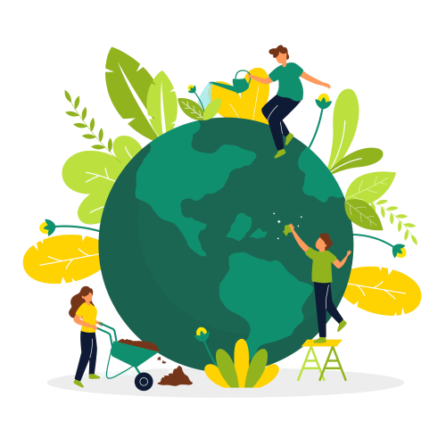
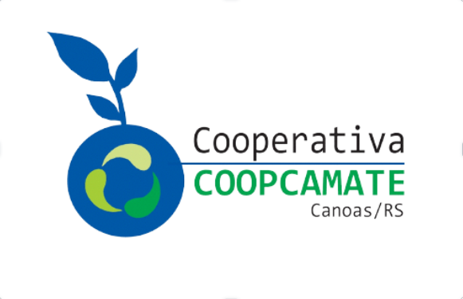
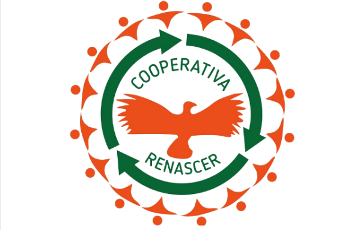
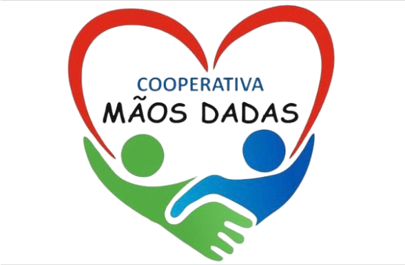
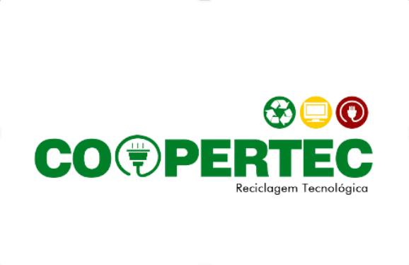

6.828
Cooperativas no Brasil (2018)

É fundamental para o sucesso da cooperativa que ela nasça do interesse de um grupo de pessoas em satisfazer suas necessidades econômicas e sociais em comum. Assim, é necessário recorrer ao órgão de controle para a abertura de uma cooperativa, a Organização das Cooperativas Brasileiras (OCB). Desta maneira e, após os processos legais serem devidamente resolvidos, a cooperativa já pode iniciar os trabalhos sociais com a premissa da filosofia de transformar o mundo tornando-o mais justo, feliz, equilibrado e com oportunidades para todos.
Cooperativas no Brasil (2018)
Pessoas empregadas em 100 países
Cooperativas em todo planeta
R. Bela Vista, 14 - Guajuviras. Canoas - RS, 92440-730

R. Dom Pedrito, 800 - Mathias Velho. Canoas - RS, 92330-250

Avenida do Nazário, 3303 - Guajuviras. Canoas - RS, 92035-000

R. Prof. Ney Lobo - Bairro Fátima. Canoas - RS, 92200-830

R.Piaui, 292 - Niterói. Canoas - RS, 92130-240

R. Berto Círio, 3370 - São Luís. Canoas - RS, 92420-030

R. Dona Maria Isabel, 1633 - Harmonia. Canoas - RS, 92320-141

R. Ivanir José Pagliarini, 506 - Niterói. Canoas - RS, 92130-510